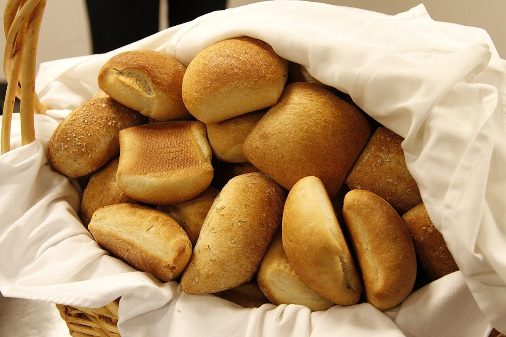

- 店名は「かわぱん」、業種はパン屋
- 所在地は山口県長門市深川湯本2658-6
- 電話番号はなし。連絡はInstagramから
- 営業時間・定休日・メニュー・価格・ご予約・駐車場は準備中
店のこと
店のこと
お店について確認できているのは、所在地とInstagramのアカウントだけです。
ここから先は制作側の想像で、お店の実際の様子とは関係がありません。「かわ」の意味は分からないので、川のように静かに流れる朝を、ぱんと一緒に思い描いてみます。

お店のこだわり、パンへの思い、ご紹介したいことがあれば教えてください。実際の言葉と写真に差し替えて完成させます。

イメージ写真
焼きたてを思い浮かべて(イメージ)